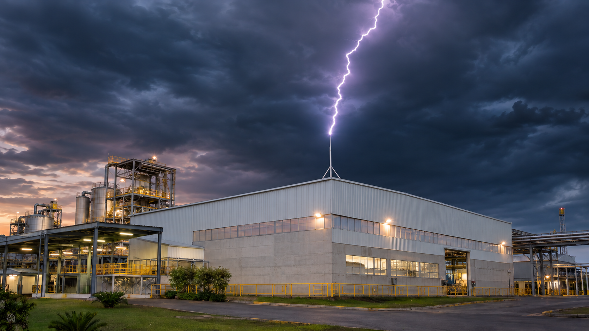
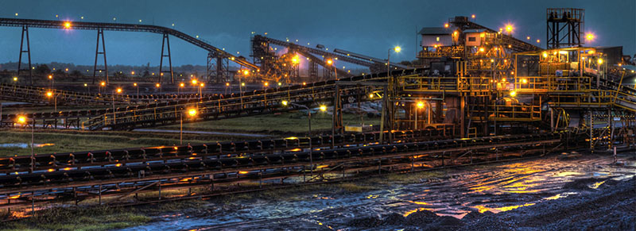
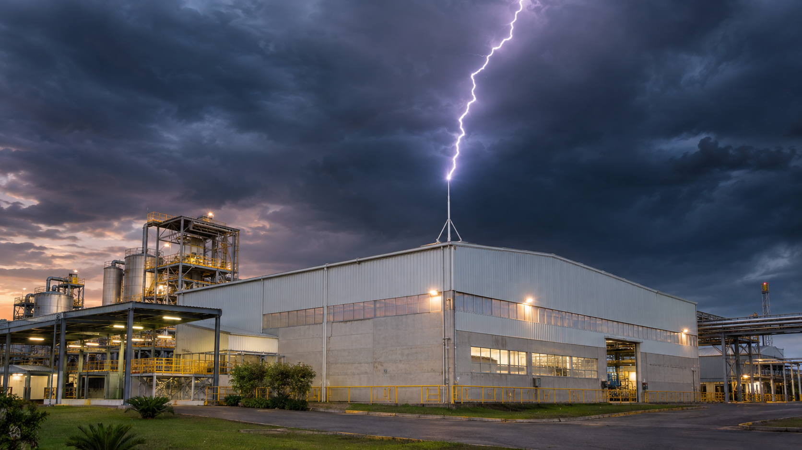
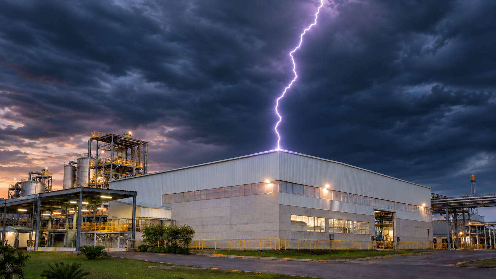

Energia
Usina Hidrelétrica Risoleta Neves
Inspeção de SPDA em instalação de grande porte, com recorrência anual que já alcança o sexto ano. O histórico permite acompanhar a evolução das condições e das correções.
Projetos, inspeções, laudos, estudos e adequações realizados em instalações industriais, de energia, mineração, telecomunicações, edifícios, hospitais, hotéis e condomínios.
Cada trabalho começa com uma pergunta diferente: entender uma instalação, verificar uma condição, corrigir uma pendência, atualizar um projeto ou apoiar uma obra. Os cases abaixo mostram como a WX2 atua conforme o problema e o nível de decisão exigido.

Inspeção de SPDA em instalação de grande porte, com recorrência anual que já alcança o sexto ano. O histórico permite acompanhar a evolução das condições e das correções.
Trabalhos de engenharia elétrica em contexto de mineração pesada, com documentação técnica compatível com instalações extensas e operações industriais.
Referência industrial em que a engenharia precisa relacionar instalação, documentação, segurança e condições reais de operação.
Atuação em ambiente industrial com foco em análise técnica, registros e informações úteis para manutenção e tomada de decisão.

Referência de grande porte em geração de energia, com demanda por documentação e análise elétrica compatíveis com uma instalação complexa.

Cases industriais que reforçam a experiência da WX2 em instalações produtivas, inspeções e documentação voltada à decisão técnica.
Em vários empreendimentos, o trabalho evolui de um diagnóstico inicial para projeto, instalação e certificação. Em outros, o resultado é uma atualização de projeto ou uma análise específica. A diferença é registrada conforme a documentação e o escopo de cada empreendimento.

Trabalho de adequação completa de SPDA em um dos edifícios mais conhecidos de Belo Horizonte, com evolução do diagnóstico para a solução executada e documentada.
Medição de armaduras que apoiou a atualização completa do projeto de SPDA de uma estrutura de grande circulação.

Case de adequação completa de SPDA, com origem em laudo e conclusão com instalação do sistema conforme a solução definida.
Referência de trabalho recorrente, em que o acompanhamento técnico ajuda a manter o histórico da instalação e orientar novas decisões.
Laudo de SPDA com foco em verificação técnica, registro das condições encontradas e recomendações para a instalação.
Vários laudos de SPDA para diferentes empreendimentos, formando uma referência de atendimento repetido e organizado.
Trabalhos relacionados a instalações de telecomunicações, com necessidade de documentação e análise elétrica.
Trabalho industrial em canteiro de obras, considerando as condições de uma instalação em implantação.
Projeto 719 relacionado à NR-10, com documentação voltada à segurança em instalações e serviços em eletricidade.
Trabalho importante em cinco sites, com necessidade de padronização e visão integrada da documentação.
Projeto elétrico para uma instalação de comunicação e produção, com escopo definido conforme a necessidade do cliente.
Referência industrial que integra o histórico de atendimentos da WX2.
Envie as informações disponíveis e explique o que precisa ser verificado. A WX2 ajuda a definir o caminho entre inspeção, laudo, projeto, adequação e acompanhamento.